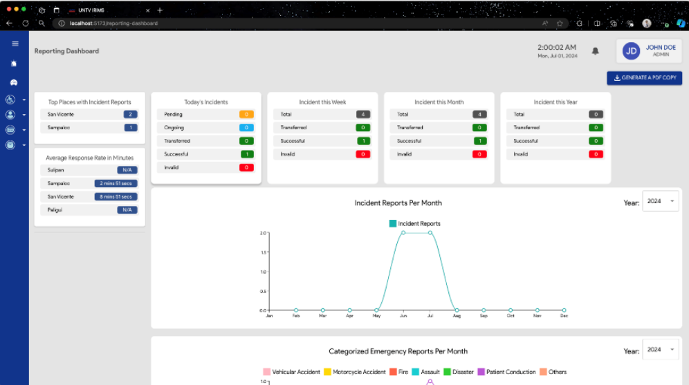

Software Engineer
Results-driven AI enabled developer building enterprise-level systems — from Student Information Systems to document management platforms. Proficient in Laravel, Vue.js, and RESTful APIs.
About me
Developer by craft, problem-solver by instinct and enhanced by AI. Based in Apalit, Pampanga — building tools that serve real institutions and real people.
BS Information Systems, La Verdad Christian College, Inc. (2024) — Best in Capstone Awardee for Incident Report IMS. Also holds IBM Project Management and Cisco Cybersecurity certifications.
From PHP internals to full Laravel enterprise apps.
Systems Developer at La Verdad Christian College — maintaining a large-scale multi-module Student Information System used by hundreds of students, faculty, and staff daily.
Production apps across document management, incident reporting, loan systems, and more.
Apalit, Pampanga
Open to remote work
Casual Cyling
Poem Writing
Technical skills
A curated set of languages, frameworks, and platforms I work with regularly — from backend APIs to front-end interfaces.
Work experience
La Verdad Christian College, Inc.
Systems Developer
Mar 2026 – Present
Full-time CurrentLa Verdad Christian College, Inc.
Student Information System (SIS) Support Staff
Jan 2025 – Mar 2026
Full-timeKaizo Enterprises Co.
Systems Engineer
Apr 2024 – Sep 2024
ContactualKaizo Enterprises Co.
Systems Engineer
Feb 2024 – Apr 2024
InternshipNotable projects
2024 • Best in Capstone
Incident Report IMS
Dual-platform system (mobile + web) for public incident reporting and management — awarded Best in Capstone at La Verdad Christian College. Handles real-time reports, status tracking, and admin workflows.

2026
Nasaan Ba?
/ nasaAN ba / — Filipino for "Where is this?"
Nasaan Ba? is a personal inventory and location management application designed to answer one simple question: Nasaan ba yung gamit ko? The user records personal belongings and the exact physical location where they are stored.
On-going2026
Magkano ba?
/ mag-KA-no ba / — Filipino for "How much does this cost?"
A lightweight, guest-first financial planning tool designed for everyday Filipinos. Whether starting a small business, launching a startup, or preparing for a major life goal, Magkano Ba? helps users surface realistic cost estimates before they commit — removing the guesswork from financial planning through AI-assisted suggestions tailored to the Philippine market.
On-going2026
Bukas ba?
/ bu-KA-s ba / — Filipino for "Is it open?"
Bukas Ba? is a hyperlocal, community-driven web and mobile application that answers one simple question: Is the store near me open right now?
Designed for Filipino communities — from urban barangays to rural sitios — the app empowers everyday users (buyers) and store owners (sellers) to collaboratively maintain real-time open/closed status of nearby establishments, sari-sari stores, market stalls, and local businesses.
Bukas Ba? is a hyperlocal, community-driven web and mobile application that answers one simple question: Is the store near me open right now?
On-going2025
FilePilot
Document Management IS for a Registrar's Office — automates status updates to document requestors and digitizes the entire request workflow.
2024
Loan Management System
Web-based system for scheduling and managing loan records with automated ledger report generation for financial transparency.
2023
Deskr
Hot-desking platform for managing work desk allocation across multiple work environments — clean scheduling UI with multi-location support.
2022
Keep
Web-based password manager with custom user password hashing — built with a focus on security primitives and zero third-party auth libraries.
Contact
Whether it's a project collaboration, a role you think I'd be a good fit for, or just a chat — my inbox is open.
Available for Remote full-time roles, freelance engagements, and consulting. Response time is usually within 24 hours.
Send a message